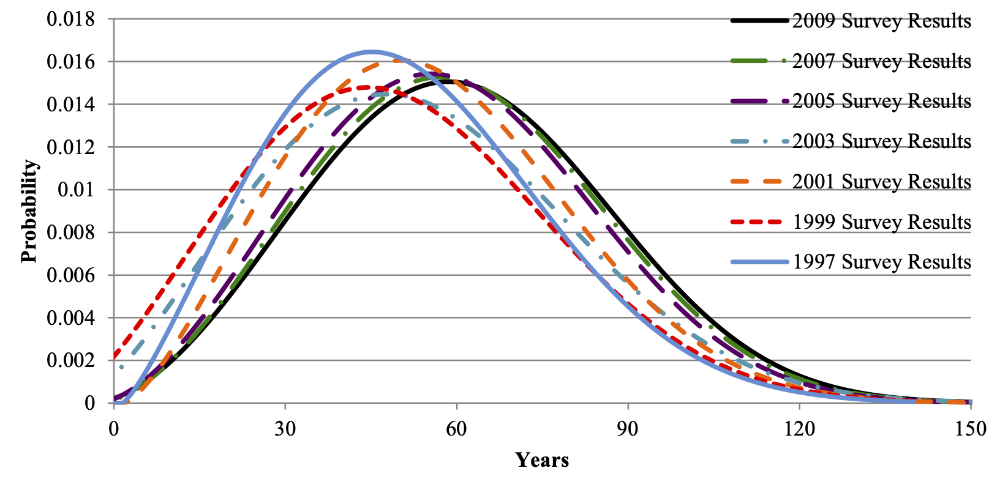
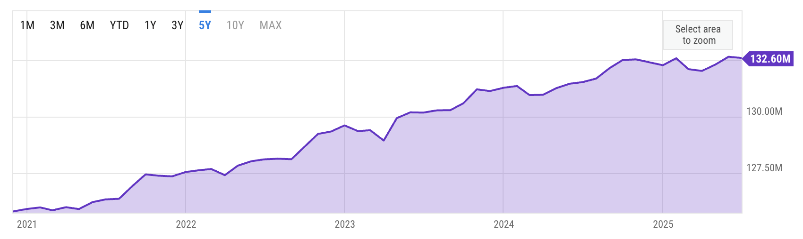

Chapter 01 Catalog
File: Chap-01/frog-dig-pot.qmd
Exercise 1 In the SIR model presented in the chapter, leave the “social distance” and “isolation percent” parameters at 20, and set the “initial cases” to 1. Then, by pressing repeatedly the “up” control in the initial cases box, see how the epidemic plays out and how the pattern of each simulated epidemic changes as the number of initial cases increases.
- Is there a tipping point?
- Give a short description of the pattern you see as the number of initial cases increases.
File: Chap-01/hamster-hurt-lamp.qmd
Exercise 2 Many people experience the symptoms of a housing shortage: splitting up apartments to accomodate roommate groups; financial stress due (in part) to high rents; deferring life decisions such as having children; living in deteriorating, aging buildings, and so on.
We’re used to thinking about people in terms of lifespan, but it is also useful to think about buildings that way. City and local governments keep detailed information about the housing stock, largely for tax purposes. Services like <zillow.com> have data readily available to the public.
Question: What about the houses listed on Zillow might presented a view biased to houses in better condition?
A life-cycle assessment of a sample of US houses and apartments by Aktas and Bilic (2012) produced the following graphic about how long houses and apartments remain habitable.

Question: Is the graph consistent with the claim that 7% of US housing stock was built before 1920?
Question: Speculate on what might account for the rightward shift of the curve over the ten year period considered. Consider these two hypotheses:
- house building techniques have been improving. (When would they have had to improve to produce the curve shift?)
- the current housing shortage has resulted in buildings being used after the time that they would have been replaced were there no housing shortage?
File: Chap-01/mouse-cost-mattress.qmd
Exercise 3 We can imagine a mechanism that might be behind the reasoning process. Think of each of the three beliefs as a packet, like a social media post, that contains hashtags. And it’s not just these three packets that are present in our mind, there are others that relate to driving. For instance:
- #safe_driving #display_brakelights The car is slowing down quickly.
- #safe_driving #speed_control To avoid collisions, match your speed to the car ahead of you.
- #safe_driving #lane_change Changing lanes can help to avoid a collision.
- #driving #speed_control To slow down quickly, press the brake pedal.
- #driving #speed_control To slow down gradually, lighten the pressure on the accelerator pedal.
- #safe_driving Avoid collisions!
- #safe_driving #lane_change Don’t change lanes if there is a vehicle near the space you will occupy.
- #safe_driving #lane_change Check your side-view mirror to see if the adjacent left lane is unoccupied.
Your observation of the brake-lights activates packet (a). This invokes a process of chain making that involves comparing the hashtags and other words in each packet. The #safe_driving hashtag in (a) aligns with several other packets such as (f), which says to avoid collisions. “Avoid collisions” in (f) in turn aligns with two packets: (b) and (c). You could follow a path from either (b) or (c). Let’s say you follow (b), perhaps because the mechanism for measuring alignment carries the reference to speed in the starting packet (a). From (b), the speed-control hashtag could activate either (d) or (e), perhaps (d) being preferred because of the “slow down quickly” aspect of both (a) and (d), or perhaps because you are a nervous driver whose anxiety directs you to use the brake. All this successive alignment of packets produces a chain:
Chain 1. (a) \(\rightarrow\) (f) \(\rightarrow\) (b) \(\rightarrow\) (d)
The packet (d) contains an inference: Press the brake pedal! That is, the alignment-detection mechanism transforms an observation into an action along the sequence of Chain 1.
There are other paths you could have taken from (a), for instance:
Chain 2. (a) \(\rightarrow\) (f) \(\rightarrow\) (b) \(\rightarrow\) (c) \(\rightarrow\) (h)\(\rightarrow\) (g) \(\rightarrow\) …
Following Chain 2 could lead you to change lanes if the adjacent lane is unoccupied—same observation, a different reasonable inferences.
I do not mean to suggest that the chain-of-reasoning analogy is the way people actually think. We need to await the eventual findings of neuroscientists to gain insight into that. But computer scientists are also strongly interested in models of reasoning, a field of study called artificial intelligence. The alignment of “packets” analogy is inspired by the mechanisms behind AI’s “Large Language Models.” These models draw from a large body of training data, largely drawn from text and other documents. For instance, LLMs break textual training data into a collecton of relatively short segments, then convert each segment into a numerical vector, which you can think of as a packet of information. An important basic mechanism of reasoning in an LLM involves calculating a number describing the alignment between vectors in the training data then chaining through other closely aligned vectors. The output of the LLM is synthesized by seeking new packets which align closely with the steps in the chain.
File: Chap-01/rabbit-hang-pan.qmd Status: null
Exercise 4 Heuristics often appear in political debate and rhetoric. Indeed, one strategy for getting agreement with your point of view is to repeat a point often enough that the listener installs it as a heuristic. For instance, in ongoing discussions about the unaffordability of health care, it is often stated, “Health care is a right!” However heartfelt your views on this matter, I think people can agree that for the statement to be correct, “health care” must be carefully defined and that not all people will agree on an appropriate definition. (For instance, is cosmetic surgery a component of health care that should be treated as a right in all circumstances? Is there a right to a hip replacement for people in the advanced stages of congestive heart failure?) So, “health care is a right” is a heuristic.
Often, rights are protected by government action. This statement is really a second heuristic, sometimes true and sometimes not. Combining the two heuristics leads to a conclusion, “Government should act to make health care affordable to all.” Your agreement with this conclusion depends in part on whether you regard the two heuristics involved as reliable.
File: Chap-01/snail-stand-oven.qmd Status: ready-to-go
Exercise 5 [From AI] cognitive bias is a predictable, systematic error in thinking that occurs when the brain tries to simplify complex information. It acts like an automated mental filter, causing people to misinterpret data, make irrational judgments, and draw faulty conclusions despite evidence to the contrary.
Why They Happen
- Mental shortcuts: The brain uses heuristics (rules of thumb) to make quick decisions.Brain protection: It filters out thousands of daily sensory inputs to prevent information overload.
- Survival evolution: Quick, instinctual reactions were historically favored over slow, logical analysis.
Common Examples
Confirmation bias: Noticing and remembering only the data that matches your current beliefs.
Anchoring bias: Relying too heavily on the very first piece of information you hear.
Availability bias: Overestimating risks based on how easily a scary memory comes to mind.
Dunning-Kruger effect: Believing you are an expert in a subject when you actually know very little.
Bias vs. Logical FallacyBias: An unconscious, psychological glitch in how your brain processes reality.
Fallacy: A flaw or error in the actual construction of an argument or logic.
File: Chap-01/ant-catch-roof.qmd Status: draft
Exercise 6 The text discusses a set of blueprints as a model of a building. Explain why a blueprint fits the technical definition of a model. Specifically, propose two purposes for which the blueprint model is a more convenient representation that than the building itself. In addition, describe a purpose for which the blueprint model is completely unsuited.
File: Chap-01/giraffe-read-coat.qmd
Exercise 7 The reading states, “A common criticism of quantitative analysis is that any particular quantitative operationalization is imperfect and incomplete.” What are some merits of this criticism? Shortcomings?
File: Chap-01/monkey-drive-book.qmd
Exercise 8
- Identify some models around you. Explain what real-world object they represent, what operations they make convenient, and what features, properties, or uses of the real-world object they do not capture. State what you think may have been the purpose of constructing that model.
- A schedule is a model. Explain what operations/re-configurations a schedule makes it easy to do.
- A commonly heard criticism of a model is that it is too simple. But simplicity is also a virtue, so the too-simple critique ought always to come with a statement about what essential feature the model is leaving out. As best you can, describe one or two elements of a real-world epidemic that the SIR model leaves out and that you suspect might change the conclusions drawn from the model.
File: Chap-01/puppy-break-mattress.qmd
Exercise 9 What is meant by “operationalization?”
File: Chap-01/seahorse-enjoy-closet.qmd
Exercise 10 The reading makes a distinction between a “variable” and a “quantity.” What is the specific difference between these two terms?
File: Chap-01/camel-leave-kitchen.qmd Status: sketch
Exercise 11
File: Chap-01/cheetah-cost-tv.qmd Status: sketch
Exercise 12 (Too many options) Pairwise comparison is practically impossible.
Use travelling salesman as an example. Show that evaluation within a pair is easy.
There can be sophisticated mathematics behind algorithms to find an optimum or near-to-optimum option.
File: Chap-01/deer-break-bowl.qmd Status: sketch
Exercise 13 UNRESOLVED car-expt-discussion
File: Chap-01/dingo-dig-suitcase.qmd Status: sketch
Exercise 14 In the new-housing example in the text, a claim was made that the number of new households increases by about 1% a year. Figure 2 shows the data on which this claim was made.

Do the calculation of household growth yourself, based on these data. Explain your calculation and whether the result agrees with the claim in the text.
File: Chap-01/eagle-seek-clock.qmd Status: sketch
Exercise 15 In a footnote, the text contrasts the definition of a “variable” in Algebra versus its definition in Statistics/Quantitative Reasoning. What is the primary difference in how these two approaches define a variable?
File: Chap-01/horse-enjoy-pants.qmd Status: sketch
Exercise 16 Proofiness
Causal reasoning and the reasons why generations of students have been deceived about correlation and causation.